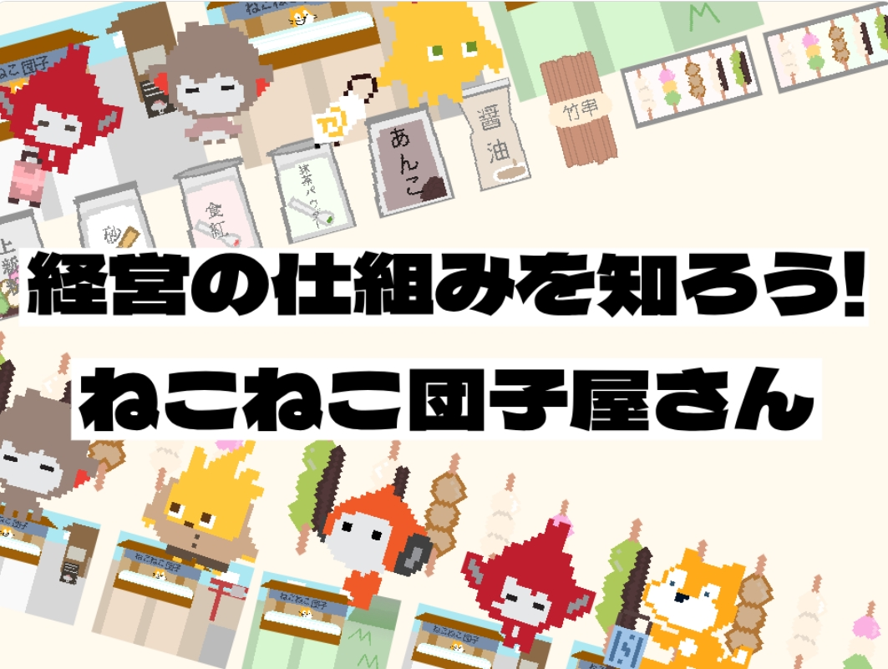
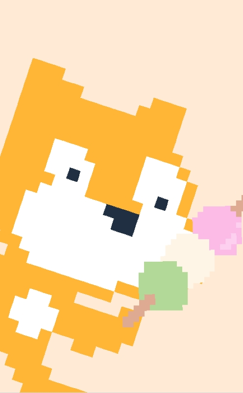
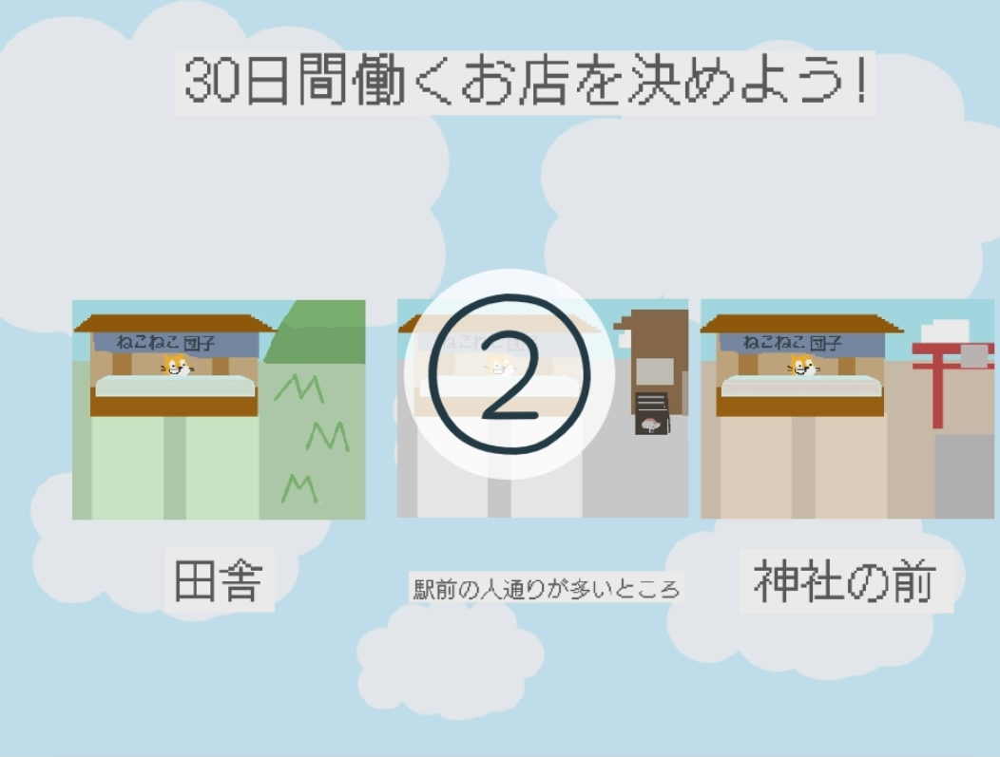
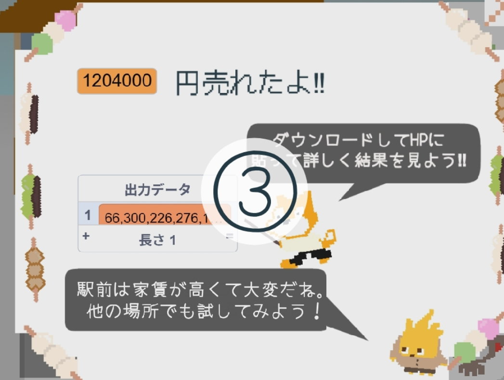
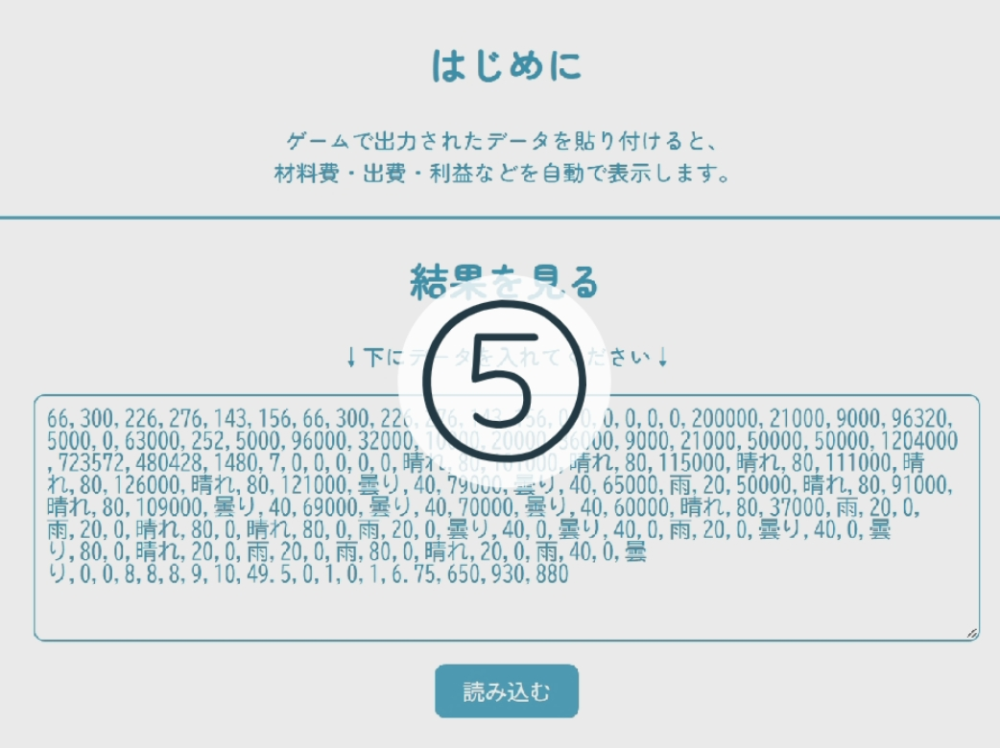
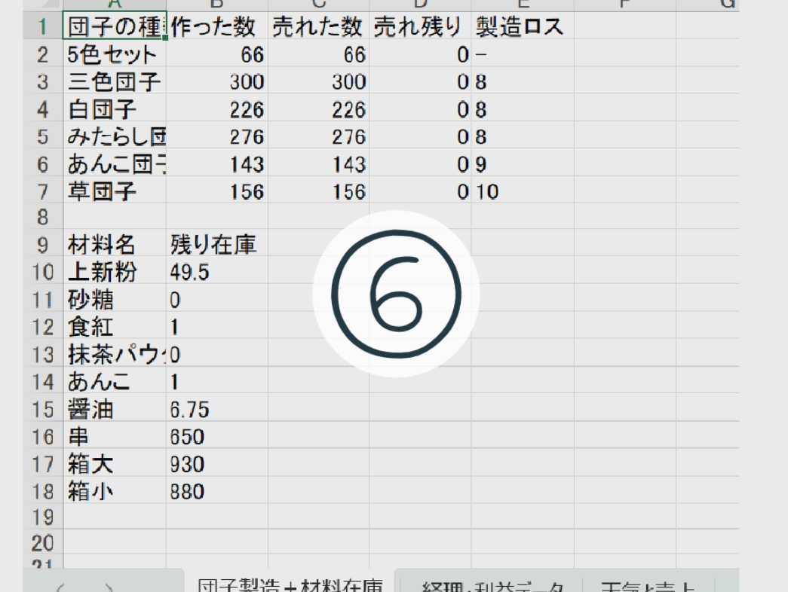

経営の仕組みを知ろう!
ねこねこ団子屋さん
はじめに
ねこねこ団子屋さんへようこそ！
このゲームでは、団子屋さんの店員として
1か月間のお店の経営を体験します。
1か月の経営は、10分間 にぎゅっとつまっています。
前半の5分間で1か月分の団子をまとめて作り、
後半の5分間では、6秒ごとに1日が過ぎていき、
天気や季節、イベントによって
お客さんの数が変化します。
この短い時間の中で、商売の楽しさだけでなく、
お金の流れや管理の難しさも
体験できるようになっています。
もしよろしければ、
あそんでいただいた感想を
書いてくださるとうれしいです。
感想はこちらから‼

play!
商売をするには、やらなければならないことが
本当にたくさんあります。
材料の仕入れ、商品の値段設定、
毎日の売上や出費の管理、消費税などの計算も必要です。
実際の小売業では、こうした経理作業が
とても負担になっていて、
人手不足のお店では、時間をかけたくても
かけられない作業のひとつです。
そこで、このゲームでは
「経営の仕組み」「経理作業」「売上の分析」を短い時間
で疑似体験できるようにしました。
ゲームが終わると、売上・経費・利益だけでなく、
天気・日ごとの来店客数・売れ残りなどのデータも
自動でExcelに出力されます。
もし本当にこんな仕組みがあったら、
小さなお店でも経理がぐっと楽になり、
人手不足の解消や、経営改善にもつながるはずです。
それでは、団子屋さんの世界を体験してみましょう！


ゲームを始めたら、
30日間働く場所と月を決めましょう‼

終わったら、
「出力データ」を
右クリックor2回ほどタップして
ゲーム結果をダウンロードし、
開いてコピーしておきましょう‼

➂でコピーした結果を
貼り付けましょう‼

Excel作成ボタン
を押して、作成しましょう